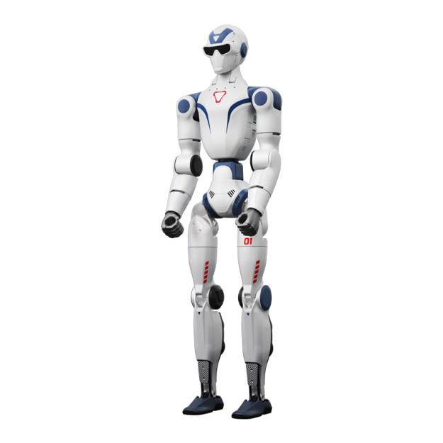

Chi cerca un confronto tra umanoidi Unitree di solito ha già deciso che vuole un robot vero, ordinabile, con un listino in euro. La domanda è quale. In questa guida mettiamo uno accanto all'altro i cinque modelli che Abra Robotics, parte della filiera Unitree Italia, ha a listino: G1, R1, H2, G1-D e R1-D. Le specifiche vengono dalle pagine ufficiali di Unitree, i prezzi dal nostro listino End-User.
Le specifiche a confronto
Valori dichiarati dal produttore per la configurazione base. Il carico al braccio varia molto con la postura del braccio, quindi va letto come ordine di grandezza.
| Modello | Altezza | Peso con batteria | Gradi di libertà | Autonomia | Carico per braccio |
|---|---|---|---|---|---|
| R1 | 1230 mm | ~27–29 kg | 20 (Air), 26 (R1), 26–40 (EDU) | ~1 h | non dichiarato |
| G1 | 1320 mm | ~35 kg | 23 (base), 23–43 (EDU) | ~2 h | ~2 kg (base), ~3 kg (EDU) |
| H2 | 1820 mm | ~70 kg | 31 | ~3 h | ~7 kg nominali, ~15 kg di picco |
| G1-D | 1260–1680 mm (colonna) | ~90 kg | 17 (Standard), 19 (versione mobile), esclusi gli end-effector | ~2 h (Standard), ~6 h (mobile) | ~3 kg |
| R1-D | da 700 mm a 1600 mm secondo versione | ~11–32 kg | 15–22 con gripper | ~1,5 h | 2–4 kg |
Fonti: pagine prodotto G1, R1, H2, G1-D e R1-D su unitree.com.
Prezzi in Italia (IVA esclusa)
| Modello | Versione d'ingresso | Versione per sviluppo |
|---|---|---|
| R1 | R1 Basic 9.210 €, R1 Air 10.158 € | R1-U1 da 16.461 €, R1-U2 da 19.544 € |
| G1 | G1 Air 23.997 € | G1-U1 da 37.563 €, G1-U2 da 45.784 € |
| H2 | H2 Air 45.000 € | H2 EDU 63.700 € |
| G1-D | Standard (piantana fissa) da 39.170 € | Flagship (base mobile) da 59.080 € |
| R1-D | Dual-Arm R1-D a partire da 12.000 € (prezzo indicativo, configurazione su preventivo) | |
I prezzi includono spedizione e dazio, IVA esclusa. L'elenco completo delle configurazioni è nel listino Unitree.
G1: la piattaforma di ricerca più diffusa

Il G1 è alto 1,32 m, pesa circa 35 kg e monta una batteria a sgancio rapido da 9000 mAh per circa 2 ore di uso. La versione base ha 23 gradi di libertà (6 per gamba, 5 per braccio). Le versioni EDU arrivano fino a 43 gradi di libertà con le mani Dex3-1 a tre dita e i polsi opzionali, alzano la coppia massima al ginocchio da 90 a 120 N·m e accettano un modulo di calcolo NVIDIA Jetson Orin.
Il punto da non perdere: lo sviluppo secondario (SDK, accesso ai giunti, ROS 2) è previsto sulle versioni EDU. Se il robot serve per tesi, paper o integrazioni software, si parte dal G1-U1 in su. Per orientarsi tra le sigle U1–U10 c'è la guida quale versione del G1 scegliere; per il software, programmare il G1.
R1: il budget più basso

L'R1 è alto 1,23 m e pesa tra 27 e 29 kg. Unitree lo vende in tre livelli: Air (20 gradi di libertà, camera monoculare), R1 (26 gradi di libertà, camera binoculare, vita e testa motorizzate) ed EDU (26–40 gradi di libertà, mani e modulo Orin opzionali). L'autonomia dichiarata è di circa 1 ora per tutte le versioni.
Anche qui lo sviluppo secondario è previsto solo sull'EDU, quindi per un laboratorio il prezzo realistico parte da 16.461 € (R1-U1), non da 9.210 €. Resta l'umanoide bipede più economico del listino ed è adatto a corsi, didattica e prime prove di reinforcement learning.
H2: quando serve la taglia adulta
L'H2 è alto 1,82 m, pesa circa 70 kg e ha 31 gradi di libertà: 6 per gamba, 7 per braccio, 3 alla vita e 2 alla testa. La coppia massima arriva a 360 N·m sulle gambe e 120 N·m sulle braccia. La batteria da 15 Ah (0,972 kWh) dà circa 3 ore. Il carico nominale per braccio è di circa 7 kg, con picchi intorno ai 15 kg.
Serve spazio, un'area di prova adeguata al peso e un caso d'uso che richieda davvero la scala umana (interazione con persone, postazioni pensate per un adulto). Lo sviluppo secondario è previsto sull'H2 EDU. Approfondimento: Unitree H2 in Italia.
G1-D e R1-D: torsi per la manipolazione

Il G1-D ha due braccia da 7 gradi di libertà, una vita a 2 gradi di libertà e una colonna che regola l'altezza tra 1260 e 1680 mm. La versione Standard è su piantana fissa (circa 2 ore), quella mobile ha una base differenziale fino a 1,5 m/s con LiDAR e circa 6 ore di autonomia. Unitree sulla propria pagina chiama la versione mobile "Ultimate"; nel nostro listino è la Flagship. Con gli end-effector i gradi di libertà totali vanno da 19 a 33 secondo la mano montata.
L'R1-D (Unitree lo presenta come Dual-Arm Humanoid Robot, modelli R1-A5, R1-A7, R1-A5-D e R1-A7-D) ha braccia da 5 o 7 gradi di libertà, 2–4 kg di carico per braccio e circa 1,5 ore di autonomia. Le versioni con suffisso D aggiungono un telaio mobile e salgono da 683 a 1600 mm di altezza.
Senza gambe, il rischio di caduta sparisce e il robot si comporta più come una cella di manipolazione. È la scelta sensata quando il compito è prendere e posare oggetti su un banco, non attraversare un reparto.
Come scegliere: cinque domande
- Serve camminare o basta manipolare? Se basta manipolare, G1-D o R1-D.
- Serve programmarlo? Se sì, servono le versioni EDU, che costano più delle versioni d'ingresso.
- Che mani servono? Gripper a due dita, Dex3-1 a tre dita (con o senza sensori tattili) o mani a cinque dita: cambiano prezzo e gradi di libertà.
- Quanto deve lavorare senza ricarica? Da circa 1 ora (R1) a circa 6 ore (G1-D mobile). Una batteria di scorta è quasi sempre necessaria per una giornata di test.
- Dove lavorerà? Un'aula, un laboratorio o un reparto produttivo hanno vincoli di sicurezza diversi (vedi Regolamento Macchine 2027).
Albero decisionale semplificato
- Budget sotto 20.000 € e uso didattico: R1, versione EDU se serve programmarlo.
- Ricerca su locomozione, AI embodied, dataset: G1 EDU.
- Mani con sensori tattili: G1-U4 (Dex3-1 tattile) o G1 EDU Ultimate F (Revo 2 Touch).
- Pick and place su banco o raccolta dati per teleoperazione: G1-D o R1-D.
- Interazione a scala umana: H2.
- Compito ripetitivo ad alta cadenza: un cobot, non un umanoide (perché).
Se il caso d'uso non è ancora chiaro, l'assessment serve a capirlo prima dell'ordine. Per impostare una prova in azienda c'è la guida al PoC con un umanoide.